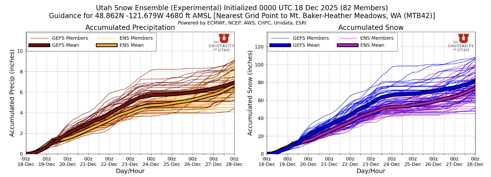
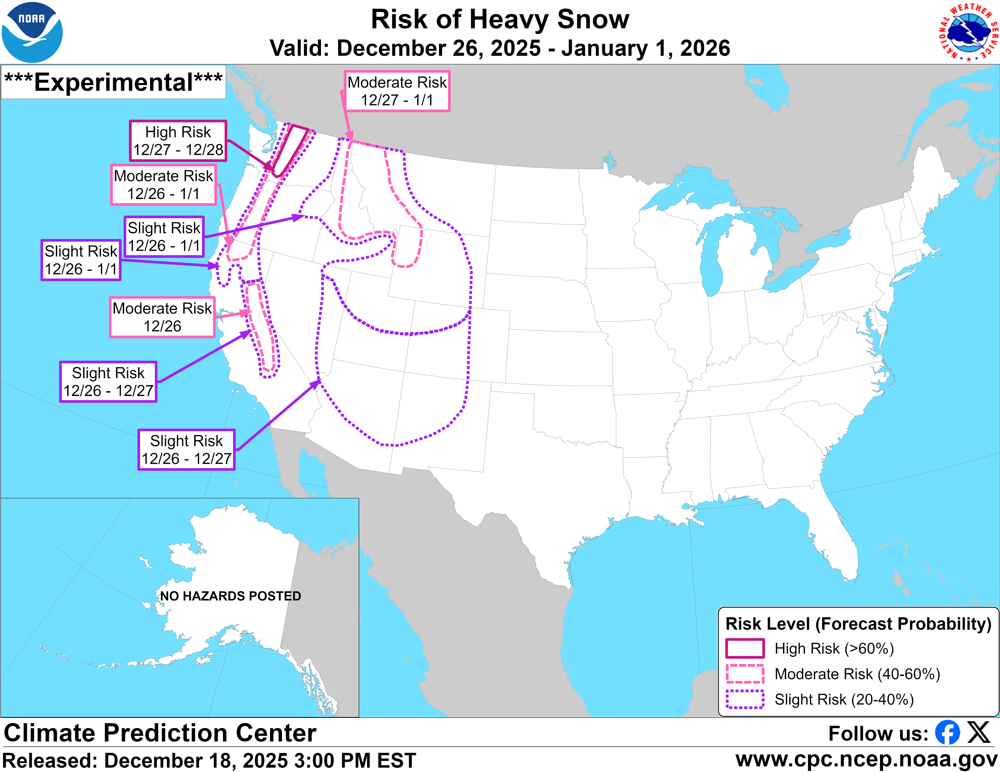

🚧 Ski It If You Can: Significant Snow is Stacking up but Highway Closures Limit Access
Welcome to The Dendritic Growth Zone!
Highway Updates
This information may not be current, please check WSDOT for the latest road conditions.
WA 542 - Mt. Baker Highway
Per the Mt. Baker Ski Area, WA 542 will remain closed Friday, 19 December. There is some optimism that WSDOT will reopen the highway to the public on Saturday though that is not a given
US 2 - Stevens Pass
At a press release Tuesday, Governor Bob Ferguson said US 2 could be closed for "months." The highway is currently closed from Skykomish to Leavenworth leaving no available route to access Stevens Pass. A source close to Cascade Mountain Weather who is a Stevens Pass patroller mentioned potential access via Plain and Lake Wenatchee later this weekend though this detour remains unconfirmed at this time.
I-90 - Snoqualmie Pass
I-90 over Snoqualmie Pass remains open.
US 97 - Blewett Pass
US 97 over Blewett Pass remains open.
WA 410 - Crystal Mountain
1 lane of WA 410 is open for alternating traffic to access Crystal Mountain. Limited parking reservations are required to access this region.
US 12 - White Pass
US 12 access to White Pass remains open. A closure in Naches is avoidable via a short detour on local roads.
Paradise (Mt. Rainier National Park)
Paradise Road is closed at the Longmire gate through Friday 19 December. Opening for the weekend is uncertain at this time, refer to the National Park Service for updates.
🧙♂️ Forecast Discussion
Short-term (Friday-Sunday)
This may come as a surprise given all we have witnessed in the wacky world of Washington winter weather the past few weeks but the pattern heading into this weekend is relatively straightforward. After a cold front moved through and dropped snow levels Thursday evening, we are looking at an extended period of cold, moist, westerly flow. This pattern is very favorable for snow at our mountain pass and lower elevation trailheads and is something we haven't seen much of the past few weeks. The plot below shows precipiation and snow forecasts for Heather Meadows (Mt. Baker Backcountry) from the Utah Snow Ensemble. The relatively small ensemble spread here suggests higher confidence in this forecast than others we have seen recently.

The one to thank for this favorable pattern is a longwave upper-level trough of low pressure spinning of the coast of Vancouver Island. This feature will remain relatively stationary over the short-term, occasionally spinning off shortwave troughs (think atmospheric disturbance). One such disturbance will ever so slightly peak precipitation rates Sunday, though this will be quite minor relative to recent memory. Look for of and on precipitation through Monday with totals of roughly 1" water equivalent per day for many mountain locations. Winds will be relatively mild compared to the past few days, ranging from 10-20mph sustained variable direction though primarily from the southwest.
Medium-Term (Friday-Monday)
The extended run of cool, moist flow comes to an end Tuesday Afternoon as the parent longwave trough of low pressure dives south and cuts off our beloved moisture. Ensembles are converging on an extended period of atmospheric river conditions for much of California next week. What does that mean for us in the PNW? Hard to say at the moment though if the subtropical moisture stays to our south, we will likely stay seasonably cool. For what it's worth, the Euro is emphasizing greater precipitation impacts (and higher freezing levels) across Western Washington while the GFS favors a weaker solution with some east-side upslope flow potential which would be help out Blewett Pass and Mission Ridge. Go team USA I suppose.
🧙🔮🧙♂️ Reading the crystal ball - 7+ day outlook
The Climate Prediction Center is forecasting moderate to high risk of heavy snow for the Cascades of Washington to close out the last few days of the year. To add to the stoke (and hope), both the EPS (European) and GEFS (US) ensembles have high agreement for persistent troughing (low pressure) off the US West Coast to end the year. While not a guarantee of anything in particular, agreement like this between ensembles increases my confidence in this outcome. For more information on what this means for skiing, see the highly technical equation below.
troughing over the West Coast + high ensemble agreement = cold air + precip → Clinton very stoked

🚧👷Site Updates👷🚧!
The past week brough significant updates to our website. Our evaluation page is now up and
running to help us evaluate how well we've done with our forecasts. We also made significant
improvements to the Current Weather page. Now located in the main website header,
this page now sports a shiny new map with the latest temperature and snow data from a variety
of NWAC and SNOTEL sites. Please let us know via our contact form on the home page if there
are any other sites you'd like to see featured here!
Current Weather.
Thanks again for visiting!
❄️ Snowfall
Weekend Snow Accumulation Forecast
| Site | Through 4am Saturday | Through 4am Sunday | Weekend Snow Accumulation (4pm Thursday through 4am Monday 22 Dec) |
|---|---|---|---|
| Mt. Baker (4500') | 8-12" | 16-26" | 24-36" |
| Washington Pass | 10-14" | 16-24" | 22-30" |
| Stevens Pass (4500') | 10-14" | 20-28" | 30-40" |
| Hurricane Ridge | 8-14" | 10-18" | 16-24" |
| Blewett Pass | 2-6" | 6-12" | 10-16" |
| Snoqualmie Pass | 8-12" | 12-18" | 18-26" |
| Crystal (5000') | 6-12" | 10-16" | 18-26" |
| Paradise | 8-14" | 16-24" | 24-32" |
| White Pass (5000') | 6-12" | 14-22" | 20-28" |
🧊 Freezing Level
- Friday: 2000-3000 feet
- Saturday: 2500-3500 feet
- Sunday: 3000-4000 feet, higher south of Paradise
🎿 Our Recommendations
Best Choice This Weekend: White Pass
White Pass will likely be quite decent this weekend with a base depth >30" on the upper mountain and a (relatively) accessible highway.
Runner-Up: Wherever you can find an open road
There won't be a whole lot of options with the ongoing highway closures. Snoqualmie Pass is your best bet for an accessible trailhead though there was zero snow up to 4500' there as recently as this past Tuesday. Baker will certainly have the best base but we still don't know if WA 542 will be open this weekend. 🤷♂️